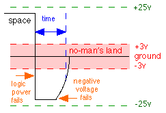

Console Server BREAK-Off
http://www.conserver.com/console/BREAK-off/breakoff.html
version 1.3 (updated:May 06, 2009, 10:17 pm
)
Questions about testing? email break-off
at conserver.com
|
This document is the original page from when we planned
to begin testing, and was updated as testing progressed. Other pages
detail our testing
results (which servers passed our tests, and which didn't),
our test methodologies,
and credits and acknowledgments.
Are you curious why
I do this? The information from testing has benefited my
employers
and their customers, but I post the information freely to the web, in
the
hopes that it will help others as well. Remote Serial Console Access
still seems to be
one of the best kept secrets of Sysadmin and Netadmin...I'm out to
change that. I don't charge for testing products, and the vendors who
participate get some feedback on their product, user interface,
packaging, documentation, sometimes their support services, and other
aspects of the customer experience. In return, I get more experience
with the newer products, and other folks get the benefit of comparing
my results without needing to perform the testing themselves. It's a
win-win-win situation.
|
Equipment desired for the testing
- A digital oscilloscope, capable of
printing/exporting
waveforms?
I did get a terrific serial line protocol analyzer
from Benedict
Communication, their model DLM-200. (The
DLM-200 page is no longer there, but you can see the bigger brother,
the DLM-250,
which adds more buffer RAM, and on-board LEDs for monitoring the signal
leads.)
My unit was invaluable for retesting many
devices, when I
lost my 8-year-old database of serial info. This analyzer is in my Serial Doctor Bag
that's with me most of the time. I'm very pleased with it's
performance, and with Benedict Computing.
|
Testing Results Summary
(Hardware I've tested that doesn't send unexpected BREAK)
Cisco NM-16A,
NM-32A
Cisco HWIC-8A,
-16A
Computone
RAS2000
Cyclades TS
and ACS
DNPG DECserver
Digi CM
iTouch
InReach 8000
Opengear CM
Perle CS9000
Detailed info is available on the BREAK-off
Test Results page. |
|
|
Why do we care?
We consider remote access to serial ports to be a very
valuable tool in administering many large enterprise networks, and many
of our peers do as well. To that end, we normally deploy a logging console server application
at sites that we service, and we have also deployed a number of
terminal servers over the years to extend our administration reach
throughout those networks.
Unfortunately, many terminal servers have this
unexpected serial
BREAK problem. More problematic is the fact that many of the large
sites we support use Sun workstations and computers;
- Sun servers usually respond to serial BREAK by going
to the OK prompt.
- Most operations are suspended, rather than being
killed.
- Older Terminal Servers can send BREAK to all attached
devices at inappropriate times.
- Some terminal servers can support 192
devices...so you could halt 192 Suns at once...
- Once halted, you have to get on each port and type GO
to get things running again.
- Each server can support thousands of simultaneous
users, who may lose work...
- You need to wait for the terminal servers to
accept remote connections again.
- It takes time to remotely access each port, one
at a time.
- It's hard to automate this process.
- There are various ways you can inhibit a SUN from
detecting, or responding to, the BREAK signal.
- As a Sysadmin, sometimes you need to use BREAK,
to get the machine to respond to you, so making it ignore the signal
would be Bad.
- Some fixes are not available on older versions of
OS.
- Some fixes are not available unless you have a
current support agreement.
Simply put, we don't want to give up the benefits that
remote access to serial consoles brings us, so we want to know which
terminal servers won't cause these problems. As a result of that need,
we're putting a bunch of different equipment through the mill, and
telling the Web what we find out.
Shameless
plugs: Last year, SysAdmin
Magazine produced a special Console
Server supplement
with their September issue. (There was another Console Server
supplement with the May 2006 issue, but I didn't contribute to that
issue.) Look back to the September/October 2000 issue of ;login:
for an article
about deploying remote access to console ports. Also, the current
keeper of the Conserver
application and I taught a half-day tutorial (M12)
at the LISA
2000 conference in early December, on deploying the Conserver
application, and using Terminal Servers for remote access to serial
consoles. I taught again at LISA
in 2002.
|
|
What we are doing to test these theories:
We started this project because getting information on
whether or not a device has the serial BREAK problem was more like
tracking down an urban legend than science. Even with high confidence
in a device, you can usually find someone who will suggest that some
unidentified third party has had some trouble with that same device in
the past...
|
Our lab testbed consists of a small IP subnet, a target host
(Sun
SPARC 5 and a Sun Netra T-1 105), a Conserver (HP Laptop running Linux,
or an iMac runnning OS X) which can also be a
TFTP and applications host, a handful of terminal server units under
test, and another system or two as a Conserver client and running a
terminal application to use the serial port for additional
diagnostics, as well as pinging the target host.
|
In our lab, we have divided the duties a bit, so that
the Server performs the Conserver and TFTP duties, while another
computer
performs most of the terminal emulation duties.
|

|
- Server
- Target
- Laptop
- DUT #1
- DUT #2
- DUT #3
|
All of the devices are connected to a common ethernet
segment. The Laptop has a serial port (shown as the green lines in the
illustration above), which we use to communicate with many of the
Devices Under Test (DUT) for their initial configurations. We then
connect each DUT in turn, via serial (shown in the illustrations as an
orange line) to the target Sun machine, and then perform the various
tests, and see if the host is brought to the OK prompt.
|
In one case, we shared our test methods with a team at another
site (Jeff Komori and Jim Dumont at
Synopsys),
and asked them to
test some hardware that they could not loan us.
The result is a very high confidence in the Cisco
3600 series
devices (3620, 3640, 3660) and the Cisco 2600 series devices (2621
tested) with the NM-32A modules. They have not sent a detectable
BREAK signal under our test conditions.
To date, I've had three reports that the Cisco NM-32A
interface
did send BREAK to a Sun host. In the first case I found out too late to
repeat the problem, but the hypothesis was that a non-standard serial
adapter had been the cause. In the second case, we did trace the source
of the trouble to an incorrectly-wired adapter. (However, I never
received a schematic for the incorrect adapter, so I'm still not sure
WHY the BREAK signal was detected this way.) The third case was
attributed to using a non-Cisco adapter, which could not be disected
(case-molded part). Swapping in a Cisco adapter cleared up the problem.
I do realize that good science relies on larger sample pools.
We
are continuing to solicit loaner equipment that we can put through
our testbed. As we run out of easy access to equipment, we will begin
to accept more offers from other teams at universities and other
large sites to perform this testing on their own gear using our test
methods. We'll review their test results, and add those results to
our database as 'external data' submissions, in order to identify
which testing we have performed personally. The initial test run is
intended to help prove out how many devices have software-related
causes versus hardware-related causes, and which devices do not
exhibit the problem.
During BREAK testing of products, I'm willing to share product
specifics with my vendor contact prior to publication of my test
report. (That is, I'll tell Cisco what we found about the Cisco gear,
tell Nortel about the Nortel/Bay/Annex gear, etc.) However, I'm
interested whether anyone thinks that would be a bad idea (and why), so
I can plan accordingly, and set appropriate expectations with the
vendor contacts. So far, I think this method has worked very well.
I have prepared a F.A.Q.
page for this testing
project, if you want to know more about the processes used to get
products
in to test.
|
More about BREAK
Conserver
allows remote client users to invoke the terminal server to issue a
BREAK on individual serial ports. This is one of the many features that
makes Conserver useful, and popular.
|
Sun offers an option to tell the CPU to ignore BREAK over the
serial console. However, there are times when you NEED to
send
a BREAK to the CPU. If you have used this option, then you need to
keep a monitor and keyboard attached to the unit in order to force
that BREAK when you need it.
(Conserver
is intended to
help free up computer room space by allowing System Administrators to
remove those extra keyboards and displays.)
Some terminal server vendors reportedly include a mode, or
line
settings, which will keep the serial ports from sending BREAK. While
it may keep the port from sending the signal at inappropriate times,
if that mode/setting also keeps Conserver from sending the BREAK
signal when we need to, this would not be a useful option.Cisco
reportedly has an ECO in place, which modified the main board inside
the 2511 product to address the BREAK issue. I'm still looking for
info about how you can tell without testing if your units should or
shouldn't send BREAK.
Cisco reportedly had an ECO in place, which modified the main
board inside the 2511-RJ
product to address the BREAK issue.
(More info on our testing
result page.)
Cisco also refers to a NuData
device (NUD-4723 non-aborting
serial
cable) that you can attach in-line between serial consoles and the
terminal server. The devices are $100 (US), and used to be available
through NuData at 1-800-844-5757. (The *-warehouse vendors no longer
carry this part.)
ASP Technologies
manufactures a commercial console server application called
Vantage, but
they also
manufactures some interesting
hardware dongles
that
prevent certain devices (Digi STS-1600, Xyplex terminal servers) from
sending serial BREAK! This is different than the NuData RS-232
in-line BREAK filter which is referred to in the Cisco tech notes. For
the Digi units (and others?) it is a dongle that connects between the
power supply and the SCSI-attached pod. For the Xyplex, you need to
use a soldering iron after opening the case, but this could be
cheaper and easier than spending $100 US per port for the NuData
devices.
|
Test Methodologies
The BREAK signal is an inversion of the data lead for a
specific period of time, exceeding the period of one character,
including the start/stop bits, and any parity. As such, the duration of
the BREAK signal is a function of the port speed of the UART sending
the data. However, many UARTS will send a BREAK signal that is 4 times
as long (some are 16-times as long) as a single character. Some DEC
manuals state that the period is actually ~250 milliseconds, and many
VT-terminals will send a long BREAK signal.
Simple visual observation may be possible with a passive
RS-232 signal tracer for most devices. This can tell us whether the
BREAK occurs immediately after Power Off or Power On, or if it occurs
later in the boot cycle, during a warm-boot of the device, or a reset
of the serial interface, and by invocation from Conserver. (Sun devices
are sensitive to short BREAK signals. If your port speed is set to
higher than 9600 bps, it can be difficult to see a short BREAK signal.
For our testing, we set the port speeds to 9600 whenever possible.)
|
|
Other testing includes measuring the actual power output
of the RS-232 drivers. While the specification calls for up to +/-25VDC
for the low/high logic signals, the "no-man's land" range (where "data
is invalid") is down at +/-3V. It is possible for devices to output
less power, but then they won't drive a signal as far...and we might
care about that when we consider large data center installations. Since
some devices use newer I.C.s with charge-pump technology, its possible
to see levels closer to +/-6V or +/-9V, and still work OK except in
some edge cases with long cable runs. Most devices so far have voltages
between +/- 13V to +/- 8V.-
If the
power rails are to blame, the signal could last longer than a normal
BREAK. If this is the case, it is possible that the Sun CPU is "too
sensitive" to BREAK. That is, if the signal doesn't return to normal
after the prescribed time period (as I believe a power rail-induced
failure would cause), the signal should probably be ignored, rather
than acted upon.
If this is a power condition-related failure, we would
likely need a digital oscilloscope, or similar device that could
trigger on a signal event, capture the waveforms of the TXD and RXD
leads (voltage over time), as well as perhaps the logic power rail
voltage, and then export that display to a Polaroid photo, a printer,
or an image file on a floppy, so that we could include the image in our
slides and write-ups.
|
|
NOTICE: Most of the pages,
articles, and tutorials on this website are
copyrighted works. You may make 'deep links' to various
pages. (If you let me know which page(s) you are linking to,
I'll let you know if I move the page(s) during updates.)
Please send me email if you wish to republish any material,
or use it on your own website.
|
Made using Nvu
Copyright 1996-2009,
David K. Z.
Harris, N6UOW

Questions? Comments? Additions? Email consoles at
conserver.com.
(Don't harvest my address, I don't want
SPAM!)
How does he do it? And
Why?